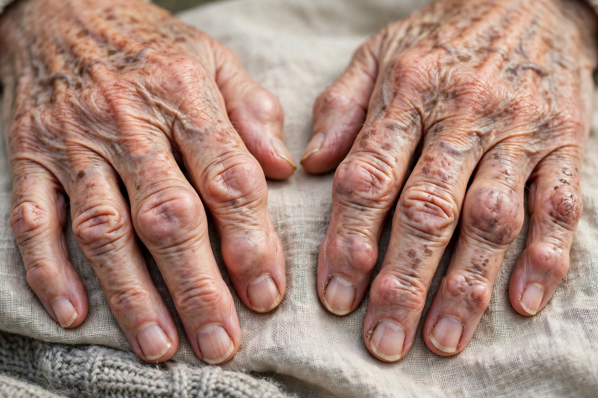

Arthritis
Arthritis is a term covering more than one hundred conditions that cause pain, swelling and stiffness in the joints. The most common form is osteoarthritis, a degenerative disease of joint cartilage; other important types include rheumatoid arthritis, gout, psoriatic arthritis and septic arthritis. Arthritis is a leading cause of disability, particularly in older adults.

| Specialty | Rheumatology |
|---|---|
| Symptoms | Joint pain, stiffness, swelling, reduced range of motion |
| Common types | Osteoarthritis, rheumatoid arthritis, gout |
| Risk factors | Age, obesity, injury, genetics, autoimmunity |
| Treatment | Exercise, analgesics, NSAIDs, DMARDs, joint replacement |
Types
Osteoarthritis results from mechanical wear and biochemical breakdown of cartilage, most often in knees, hips, hands and spine. Rheumatoid arthritis is a systemic autoimmune disease in which the immune system attacks the synovium, causing symmetric joint inflammation and erosion; it involves B cells, T cells and autoantibodies such as rheumatoid factor and anti-CCP. Gout is caused by deposition of urate crystals, and septic arthritis is a joint infection requiring urgent drainage and antibiotics.
Signs and symptoms
Joint pain, morning stiffness (prolonged in inflammatory types), swelling, warmth and loss of function are typical. Systemic features such as fatigue, fever and rash may accompany autoimmune forms.
Diagnosis and management
Diagnosis combines history, examination, blood tests (inflammatory markers, autoantibodies) and imaging. Management emphasises exercise, weight control, analgesia and, for inflammatory arthritis, disease-modifying drugs and biologics; severely damaged joints may be examined by arthroscopy or replaced surgically.
See also
Arthroscopy · Osteoarthritis · Rheumatoid arthritis · Gout